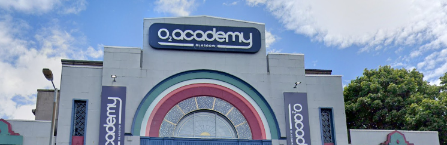
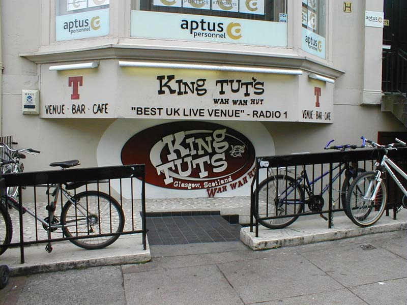

Top 5 Entertainment Venues in Glasgow
This website Will Show you the best venues to go to if your looking for a great weekend in glasgow
5 Ovo Hydro
The OVO Hydro probably the most mainstream venue on this list it has a ton of different events, the OVO Hydro is definitely one of the biggest venues in Glasgow and when its rocking its hard to beat the atmosphere cannot be beaten
Its hosted the likes of Olly Murs, Liam Gallagher and Stevie Nicks and tries to give its attendees a variety of different artists from around the world, if your looking for the biggest Glasgow can give you go to the OVO Hydro
As long as your older than 18 the Hydro Is free to enter and is located at
Exhibition way, Stobcross Rd, Glasgow G3 8YW

4
The O2 Academy
The O2 Academy is arguably glasgows most famous venue, they have hosted a ton of different artists like Chappel Roan and Fontaines DC, The O2 is for people that want the same atmosphere of the OVO but in a more intimate setting then the O2 is the place to go
The O2 has a capacity of 2550 which gives it a lot of flexibility in its events which makes it not just a place to go to for great music but also a place to go to for a ton of other types of events.
No under 8s are allowed into the o2, if your aged between 8-13 then an adult with have to accompany you which is 16+, the o2 is located at 121 Eglinton St, Glasgow G5 9NT

3
The Garage
The garage is one of the most iconic venues in Glasgow located on the infamous Sauchiehall street,
this venue has held a lot of different artists and performers such as Marylin Manson and one direction, I would go to say that the garage is the most recognized venue in Glasgow
The garage doesn’t just have music though it has a wide variety of different entertainment such as club nights and various different activities, the venue is also very well known for its student friendly atmosphere with cheap drinks and an inclusive environment.
You can enter the garage for most gigs if you are 14+ but under 16s need to bring an adult, although the club in the garage is only for 18+ and is located at 490 Sauchiehall St, Glasgow G2 3LW.

2
King Tuts
King tuts Wah Wah hut is a hidden gem of Glasgow, being able to hold around 300 people it gives of an atmosphere like none other,
being small as it is it managed to have named like Oasis, Paulo Nutini and the verve and a lot more, King Tuts is an amazing place to go If your looking for a more intimate venue
King tuts is known for boosting the popularity of emerging artists as the size makes it not so daunting for smaller artists to put there name out there.
King tuts is only 18+ and is located at 272A St Vincent St, Glasgow G2 5RL.

1
The Barrowlands
The barrow lands is one of Glasgow’s oldest and most popular Entertainment venues, it may not be the biggest in terms of size but it’s definitely the biggest in terms of reputation. The barrow lands host a variety of different acts such as Amyl and the sniffers, the barrow lands has also had some incredibly massive artists such as Oasis, and even David Bowie
The barrow lands is number 1 on this list due to the variety of artists who have played here and the popularity of some of them and also the glowing reputation it has if your looking for a great weekend in Glasgow the barrow lands is the place to go.
You must be over 18 to attend gigs here and it is located at
244 Gallowgate, Glasgow G4 0TT